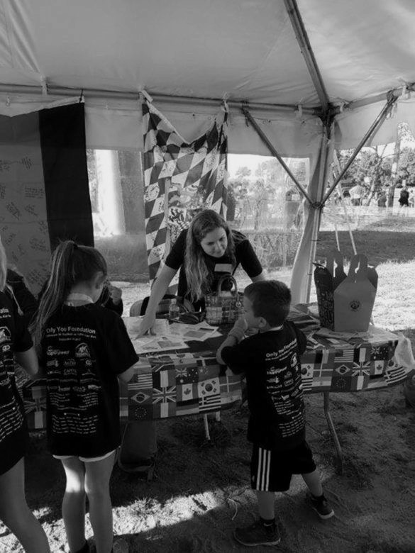

Clear Mission: Charities should have a clearly defined mission and objectives to enhance the effectiveness
of their activities and ensure the suitability of strategies for achieving their goals.
Financial Transparency: Transparency in recording and disclosing income and expenses is crucial for gaining
public trust.
Dynamic and Flexibility: Charities need to adapt to environmental and societal changes and be flexible in
planning and executing their activities.
Local Impact: Paying attention to local needs and problems and striving to address them is an important
characteristic of charities.
Technology Utilization: Utilizing technology as a tool to increase efficiency, transparency, and
communication is essential for successful charities.
Responsiveness to Needs: Charities should be able to identify and respond to the changing needs and problems
of the community.
